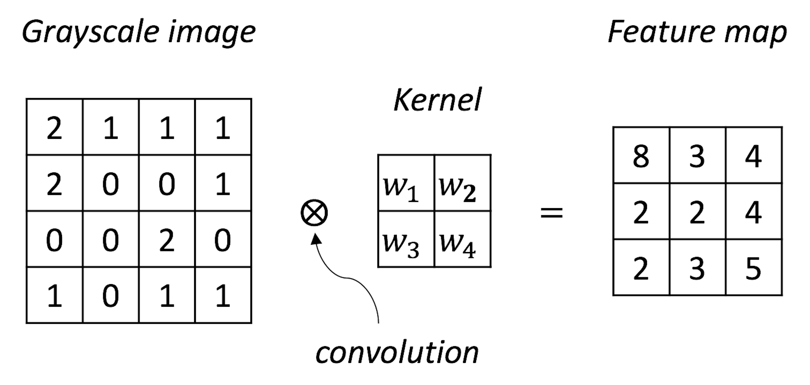

Chapter 10. Synthesis: Architecture & Pipeline
Overview
Chapter 10 is about synthesis. Synthesis is not a rigorous term but refers to a type of common pratice that integrates, consolidates, or streamlines many otherwise stand-alone models into a mega-model or pipeline. Two styles of synthesis will be introduced here, one represented by deep learning, and another takes the form as pipelines.
Deep learning
To know more about “deep learning,” we need to start with its name. The word “deep” is ambiguous but expressive, undetermined but significant. This inviting gesture may have a dazzling effect, but it is based on a specific reason: a deep neural network model is truly deep in terms of its architecture—from input variables to output variables there are many layers in between. Other than that, it is not different from other models in this book. The basic framework of learning as shown in Figure 3 and Eq. (1) in Chapter 2 still holds true for deep learning.
The word “deep” doesn’t imply that other models we have learned so far are not deep. Many models have been studied in great depth, such as the linear models248 Anderson, T. W., An Introduction to Multivariate Statistical Analysis, Wiley, 3rd edition, 2003. and the learning theory developed for the support vector machine249 Vapnik, V., The Nature of Statistical Learning Theory, Springer, 2000.. In this chapter, we will refer to deep learning, specifically to those neural network (NN) models that have many hidden layers, because for NN models we could take the word “deep” at face value—if a model looks deep, it is a deep model. This superficiality, however, builds on a solid foundation250 E.g., the Universal approximation theorem; please refer to Hornik, K., Approximation Capabilities of Multilayer Feedforward Networks, Neural Networks, Volume 4, Issue 2, Pages 251-257, 1991.: a neural network with a more complex architecture means a more complex form for \(f(x)\) in Eq. (1). In other words, this is an attractive proposal, since it suggests we can easily build up depth and capacity of the model by merely increasing its visual complexity. And there have been tools that allow users to drag ready-made modules and piece them together to create the architecture of the NN model they’d like to build, and automatically translate the architecture into its mathematical form and carry out the computational tasks for model training and prediction251 E.g., TensorFlow https://www.tensorflow.org/..
Rationale and formulation
An architecture means a function. We have mentioned in Chapter 2 that the data modeling methods seek explicit forms of \(f(x)\) in Eq. (1), while algorithmic modeling methods seek implicit forms. Deep models bend the two. It is like an algorithmic modeling method that you don’t need to write up the specific form of \(f(x)\), while on the other hand, in theory you could write up \(f(x)\) after you have had the architecture252 In this sense, it is also like the kernel trick used in the SVM model. Remember that in Chapter 7 we have seen that by using the kernel function in SVM, an implicit transformation of the variables is achieved, and we usually do not know what is the explicit form of \(\phi(x)\) the SVM model encodes, but in theory there is such a form of \(\phi(x)\)..
The architecture of a NN model could be quite expressive, i.e., Figure 178 shows an architecture of a neural network model with one layer that is flexible enough to include existing models such as the linear regression model, logistic regression model, and SVM, as shown in Table 53.
Figure 178: Architecture of a simple neural network model. The figure is drawn using Alex LeNail’s online tool: http://alexlenail.me/NN-SVG/index.html.
.](graphics/10_nn_architecture.png)
Table 53: Expression of some models using the architecture of a one-layer neural network in Figure 178
| Model | Activation Function \(\Phi\) | |
|---|---|---|
| Linear regression | Linear: \(\Phi(z)=z\) | \(\mathcal{L}(\boldsymbol{w})=\left(y-\sum_{i=1}^{p} w_{i} x_{i}\right)^2\) |
| Logistic regression | Sigmoid: \(\Phi(z)=\frac{1}{1-e^{-z}}\) | \(\mathcal{L}(\boldsymbol{w})=\log(1+\exp[-y\sum_{i=1}^{p} w_{i} x_{i}])\) |
| Support vector machine | Null: \(\Phi(z)=z\) | \(\mathcal{L}(\boldsymbol{w})=\max(0,1-y\sum_{i=1}^{p} w_{i} x_{i})\) |
The NN structure shown in Figure 178 is a basic form of NN architecture that is called the perceptron. As a basic form, it is a module that could be repeatedly used in different kinds of composition, e.g., in parallel, concatenation, or in a sequence. The basic forms are also called architectural primitives or foundational building blocks. Most deep architectures are built by combining these architectural primitives. Figures 179 and 180 show two examples. There have been many of those basic forms developed. Softwares such as TensorFlow build on this concept by allowing users to use graphic user interface (GUI) to compose the architecture of their deep networks using these building blocks253 For introduction of TensorFlow, readers may check out this book: Ramsundar, B. and Zadeh, R. TensorFlow for Deep Learning: from Linear Regression to Reinforcement Learning, O’Reilly Media, 2017..
As we have mentioned, for NN models there are theories showing that if a model looks deep, it is a deep model. The universal approximation theorem has shown that a NN model with one hidden layer could characterize all smooth functions. While there is no guarantee that in practice adding more layers will always be better, the theoretical results did imply that is the right direction.

Figure 179: Build more complicated NN models with a basic form
Figure 180: Build deeper NN models with basic forms and activation functions
Recall the XOR problem introduced in Chapter 7 as shown in Figure 124. With a slight modification of the problem to facilitate the presentation here, the dataset has \(4\) data points
\[\begin{equation*} \small \begin{array}{l}{\boldsymbol{x}_{1}=(0,0), y_{1}=0}; \\ {\boldsymbol{x}_{2}=(0,1), y_{2}=1}; \\ {\boldsymbol{x}_{3}=(1,0), y_{3}=1} ;\\ {\boldsymbol{x}_{4}=(1,1), y_{4}=0.}\end{array} \end{equation*}\]
This is a typical nonlinear problem. A NN model with one hidden layer as shown in Figure 181 could solve this problem.

Figure 181: Architecture of a neural network with a hidden layer
For instance, for \(\boldsymbol{x}_{1}=(0,0)\), from the input layer to the first node (i.e., the upper one) in the hidden layer, we have
\[\begin{equation*} \small 0 \times 1 + 0 \times 1 + 1 \times 0 = 0. \end{equation*}\]
The value \(0\) provides the input for the activation function at the hidden node, and we have \(\Phi(0) = \max (0,0) = 0\).
From the input layer to the second node (i.e., the lower one) in the hidden layer, we have
\[\begin{equation*} \small 0 \times 1 + 0 \times 1 + 1 \times -1 = -1. \end{equation*}\]
The value \(-1\) provides the input for the activation function at the hidden node, and we have \(\Phi(-1) = \max (0,-1) = 0\).
Then, from the hidden layer to the output layer, we have
\[\begin{equation*} \small 1 \times 0 - 2 \times 0 = 0. \end{equation*}\]
Using the activation function at the output layer, \(\Phi(z) = z\), the final prediction correctly predicts
\[\begin{equation*} \small y = 0. \end{equation*}\]
We can follow the same process and see that the two-layer NN as shown in Figure 181 could solve the XOR problem.
How to read a deep net. Roughly speaking, there are three major efforts in developing deep learning models: to create basic forms, to design architectural principles or composition rules, and to design learning algorithms that can robustly and efficiently learn the parameters of the deep model using data254 A deep NN model has massive parameters, so learning these parameters from data had been a challenge in the past. Some contributed the recent revitalization of deep learning—as the neural network model had its “rise and fall” in the past decades—to a range of optimization tricks such as pretraining and dropout, the growth of computing power, and the availability of Big Data, all enabled the data-driven learning of a giant collection of parameters of a deep NN model.. Practical application of deep models is to make the network deeper by stacking these basic forms following some composition rules. From this perspective, it is not a surprise to see why it was quoted, “For reason in this sense is nothing but reckoning, that is adding and subtracting …”255 Hobbes, T., Leviathan. 1651., to explain the logic of designing neural networks in Raul Rojas’s book256 Rojas. R., Neural Networks: a Systematic Introduction. Springer, 1996..
We can take a look at the convolutional neural networks (CNN) as an example. The CNN is one popular deep NN model and is often used for learning from image data. Its architecture consists of a few basic forms and composition rules that are particularly developed for images.
Figure 182: Architecture of a CNN model
The CNN architecture shown in Figure 182 has two parts. The first part (i.e., everything before the last \(3\) layers) is to translate the image data into vectorized form and provides the input for the second part (i.e., the last \(3\) layers) that is a NN as we have discussed earlier. One basic form of CNN is the convolutional layer. The basic purpose of a convolutional layer is to transform the image into a feature map, as shown in Figure 183.
Figure 183: A convolutional layer aggregates spatially correlated information as a feature extraction process
Suppose that \(w_1=1\), \(w_2=2\), \(w_3=2\), \(w_4=1\) in Figure 183; Figure 184 further shows the computational details of how the convolutional layer works.
Figure 184: How the convolutional layer works.

The convolutional layer is good at exploiting the spatial structure257 I.e., if the entities that are close to each other are semantically related, it is a spatial structure. in its input data. Because of this, CNN is particularly useful for learning from image data, since for images the pixels close to one another are usually semantically related.
The max pooling layer is another basic form of CNN. Figure 185 shows how it works. The max pooling looks too simple an idea, but it works remarkably well. The real mystery when we look at a “simple” idea like this is why it was the max pooling that stood out among many other “simple” ideas. But there has been no conclusive theory to explain it258 To quote Andrew Ng in his online course for convolutional neural networks (https://www.coursera.org/learn/convolutional-neural-networks): “… the main reason people use max pooling is because it’s been found in a lot of experiments to work well … I don’t know of anyone who fully knows if that is the real underlying reason.”.
But one can compare the max pooling with the convolutional layer. One difference is that the parameters of a convolutional layer is learned from data, making it an adaptive and flexible form to a particular problem. The max pooling, however, is a fixed nonlinear transformation without parameters to learn. In other words, it has no computational cost. No wonder it is believed that one main function of the max pooling is to reduce the number of parameters of the deep NN model and to alleviate the computational cost. This would relieve some computational burden since a deep NN model has a massive number of parameters to be learned from data. Another aspect we should think of is that max pooling is good for image data. It may help increase the robustness of the model against translation invariance, i.e., to recognize an object, say, a cat, in an image, we need the algorithm to be resilient to the potential variation on angle or distance or any other factors that cause scale issues. Max pooling only keeps the “max” and discards the rest.
Figure 185: How the max pooling layer works

One can add as many convolutional layers or max pooling layers as needed when designing a CNN model, and the convolutional layers and the max pooling layer could be alternatively arranged as a pipeline to extract features from the image data, e.g., in Figure 182, there are \(2\) convolutional layers and \(1\) max pooling layer. It has been found in many cases that for the CNN to be successful, it needs to be made quite deep. For this reason, some consider the deep NN models a different species from NN models.
R Lab
The 6-Step R Pipeline for NN. Step 1 and Step 2 get the dataset into R and organize it in required format.
# Step 1 -> Read data into R workstation
library(RCurl)
url <- paste0("https://raw.githubusercontent.com",
"/analyticsbook/book/main/data/KR.csv")
data <- read.csv(text=getURL(url))
# str(data)
# Step 2 -> Data preprocessing
# Create X matrix (predictors) and Y vector (outcome variable)
X <- data$x
Y <- data$y
# Create a training data
train.ix <- sample(nrow(data),floor( nrow(data) * 4/5) )
data.train <- data[train.ix,]
# Create a testing data
data.test <- data[-train.ix,]Step 3 creates a list of models. For a NN model, important decisions are made on the design of the architecture, e.g., how many hidden layers and how many nodes in each hidden layer. For example, here, we create three NN models, all have one hidden layer but a different number of hidden nodes.
# Step 3 -> gather a list of candidate models
# NN model with one hidden layer and different # of nodes
# model1: neuralnet(y~x, data=data, hidden=c(3))
# model2: neuralnet(y~x, data=data, hidden=c(5))
# model3: neuralnet(y~x, data=data, hidden=c(8)) Step 4 uses cross-validation to evaluate the candidate models to identify the best model.
# Step 4 -> cross-validation for model evaluation
n_folds = 10 # number of folds
# the sample size, N, of the dataset
N <- dim(data.train)[1]
folds_i <- sample(rep(1:n_folds, length.out = N))
library(neuralnet)
# cv_mse records the prediction error for each fold
cv_mse <- NULL
for (k in 1:n_folds) {
# In each iteration of the n_folds iterations
test_i <- which(folds_i == k)
# This is the testing data, from the ith fold
data.test.cv <- data.train[test_i, ]
# Then, the remaining data form the training data
data.train.cv <- data.train[-test_i, ]
# Fit the neural network model with one hidden layer of 3
model1 <- neuralnet(y~x, data=data, hidden=c(3))
# Predict on the testing data using the trained model
pred <- compute (model1, data.test.cv)
y_hat <- pred$net.result
model1$y_hat <- y_hat
# get the true y values for the testing data
true_y <- data.test.cv$y
# mean((true_y - y_hat)^2): mean squared error (MSE).
# The smaller this error, the better your model is
cv_mse[k] <- mean((true_y - y_hat)^2)
}
mean(cv_mse)The result is shown below
# [1] 0.09439574 # Model1
# [1] 0.04433521 # Model2
# [1] 0.1142009 # Model3Obviously, model2 achieves the lowest prediction error.
Figure 186: Visualization of the three fitted models and the data

We can also visually examine the fitness of the three models in Figure 186 to see how well the three models fit the data.
# Use visual inspection to assist the model selection.
# Predict on the testing data using the trained model
pred <- compute(model1, data.train)
y_hat <- pred$net.result
model1$y_hat <- y_hat
# Predict on the testing data using the trained model
pred <- compute(model2, data.train)
y_hat <- pred$net.result
model2$y_hat <- y_hat
# Predict on the testing data using the trained model
pred <- compute(model3, data.train)
y_hat <- pred$net.result
model3$y_hat <- y_hat
plot(y ~ x, data = data.train, col = "gray", lwd = 2)
lines(data.train$x, model1$y_hat,lwd = 3, col = "darkorange")
lines(data.train$x, model2$y_hat,lwd = 3, col = "blue")
lines(data.train$x, model3$y_hat,lwd = 3, col = "black")
legend(x = "topright", legend = c("NN (3 hidden nodes)",
"NN (5 hidden nodes)", "NN (8 hidden nodes)"),
lwd = rep(3, 4), col = c("darkorange", "blue", "black"),
text.width = 32, cex = 0.85)Figure 187: Visualization of the architecture of the final model
Step 5 builds the final model. Figure 187 shows the architecture of the final model.
# Step 5 -> After model selection, build your final model
nn.final <- neuralnet(y~x, data=data.train, hidden=c(5)) #
plot(nn.final) # Draw the architecture of the NN modelStep 6 uses the final model for prediction.
# Step 6 -> Evaluate the prediction performance of your model
# Predict on the testing data using the trained model
pred <- compute(nn.final, data.test)
y_hat <- pred$net.result
# get the true y values for the testing data
true_y <- data.test$y
# mean((true_y - y_hat)^2): mean squared error (MSE).
# The smaller this error, the better your model is
mse <- mean((true_y - y_hat)^2)
print(mse)The 6-Step R Pipeline for CNN. Before starting the pipeline, let’s first install the Keras package.
install.packages("devtools") # install devtools
devtools::install_github("rstudio/keras") # install KerasStep 1 and Step 2 get the MNIST handwritten digit dataset into R and process the data in required format. The goal is to classify a handwritten number into one of the \(10\) classes (from \(0\) to \(9\)).
# Step 1 -> Read digits classification data
library(keras)
mnist <- dataset_mnist()
# Step 2 -> Data preprocessing
# code adapted from
# keras.rstudio.com/articles/examples/mnist_cnn.html
# Input image dimensions
img_rows <- 28
img_cols <- 28
num_classes <- 10
# The data, shuffled and split between training and testing sets
x_train <- mnist$train$x
y_train <- mnist$train$y
x_test <- mnist$test$x
y_test <- mnist$test$y
# Redefine dimension of train/test inputs
x_train <- array_reshape(x_train,
c(nrow(x_train), img_rows, img_cols, 1))
x_test <- array_reshape(x_test,
c(nrow(x_test), img_rows, img_cols, 1))
input_shape <- c(img_rows, img_cols, 1)
# Transform RGB values into [0,1] range
x_train <- x_train / 255
x_test <- x_test / 255
cat('x_train_shape:', dim(x_train), '\n')
cat(nrow(x_train), 'train samples\n')
cat(nrow(x_test), 'test samples\n')
# Convert class vectors to binary class matrices
y_train <- to_categorical(y_train, num_classes)
y_test <- to_categorical(y_test, num_classes)Step 3 creates different models. In deep learning, parameters that are determined before training a model are called hyperparameters. Hyperparameters for a CNN include number of layers, number of nodes for a layer, kernel size of a convolution layer259 E.g., in Figure 184 the kernel size is \(2\)., etc. Here we create three models with different kernel sizes for the convolution layers.
# Step 3 -> gather a list of candidate models
define_model <- function(kernel_size){
model <- keras_model_sequential() %>%
# convolution layer 1
layer_conv_2d(filters = 8,
kernel_size = c(kernel_size,kernel_size),
activation = 'relu',
input_shape = input_shape) %>%
# pooling layer 1
layer_max_pooling_2d(pool_size = c(2, 2)) %>%
# convolution layer 2
layer_conv_2d(filters = 16,
kernel_size = c(kernel_size,kernel_size),
activation = 'relu') %>%
# pooling layer 2
layer_max_pooling_2d(pool_size = c(2, 2)) %>%
# dense layers
layer_flatten() %>%
layer_dense(units = 32, activation = 'relu') %>%
layer_dense(units = num_classes, activation = 'softmax')
# Compile model
model %>% compile(
loss = loss_categorical_crossentropy,
optimizer = optimizer_adadelta(),
metrics = c('accuracy')
)
return(model)
}
# define three models
model_kernel_1 = define_model(kernel_size=2)
model_kernel_2 = define_model(kernel_size=3)
model_kernel_3 = define_model(kernel_size=5)Step 4 uses cross-validation to evaluate the candidate models to identify the best model.
# Step 4 -> Use cross-validation for model evaluation
# set upfunction for evaluating accuracy
cv_accuracy <- function(n_folds, kernel_size,x_train,y_train){
N <- dim(x_train)[1] # the sample size, N, of the dataset
folds_i <- sample(rep(1:n_folds, length.out = N))
accuracy_v <- NULL
for (k in 1:n_folds) {
# set up training and testing data
test_i <- which(folds_i == k)
x.train.cv <- x_train[-test_i,,,,drop=FALSE]
x.test.cv <- x_train[test_i,,,,drop=FALSE]
y.train.cv <- y_train[-test_i,,drop=FALSE ]
y.test.cv <- y_train[test_i,,drop=FALSE ]
model <- define_model(kernel_size)
model %>% fit(
x_train, y_train, batch_size = 128,
epochs = 2,validation_split = 0.2, verbose = 0
)
scores <- model %>% evaluate(
x.test.cv, y.test.cv, verbose = 0)
accuracy_v <- c(accuracy_v, scores[2])
}
return(accuracy_v)
}
# get average accuracy for each model
accuracy_v_kernel_1 <-
cv_accuracy(n_folds=2,kernel_size=2,x_train,y_train)
print(mean(accuracy_v_kernel_1))
accuracy_v_kernel_2 <-
cv_accuracy(n_folds=2,kernel_size=3,x_train,y_train)
print(mean(accuracy_v_kernel_2))
accuracy_v_kernel_3 <-
cv_accuracy(n_folds=2,kernel_size=5,x_train,y_train)
print(mean(accuracy_v_kernel_3))The result is shown below.
# [1] 0.9680667 # Model1
# [1] 0.9742167 # Model2
# [1] 0.9760833 # Model3Step 5 builds the final model based on all the training data.
# Step 5 -> After model selection, build your final model
model <- define_model(5)
model %>% fit(
x_train, y_train, batch_size = 128,
epochs = 2,validation_split = 0.2, verbose = 0
)Step 6 uses the final model for prediction.
# Step 6 -> Evaluate the prediction performance of your model
scores <- model %>% evaluate(
x_test, y_test, verbose = 0)
print(scores[2])To visualize the process of how this CNN model works, the following R code is used to visualize the output from each layer, shown in Figure 188.
Figure 188: Visualize the outputs from all layers of the CNN model

# visualize output for a layer
# use the first image from testing data
img <- x_test[1,,,]
plot(as.raster(img))
img <- x_test[1,,,,drop=FALSE]
# define function to plot an image
plot_image <- function(channel) {
rotate <- function(x) t(apply(x, 2, rev))
image(rotate(channel), axes = FALSE, asp = 1,
col = gray.colors(12))
}
# plot the testing image
plot_image( 1 - img[1,,,] )
# plot the output from the second layer
layer_number = 2
# print layer name
layer_name <- model$layers[[layer_number]]$name
print(layer_name)
layer_outputs <- lapply(model$layers[layer_number],
function(layer) layer$output)
activation_model <- keras_model(inputs = model$input,
outputs = layer_outputs)
# calculate the outputs from the layer for the image
layer_activation <- activation_model %>% predict(img)
# check dimension
print(dim(layer_activation))
# number of features
n_features <- dim(layer_activation)[[4]]
# image width
image_size <- dim(layer_activation)[[2]]
# number of columns and images per column
# (each column plots an image)
n_cols <- n_features
images_per_col <- 1 #
# plot n_cols of images
op <- par(mfrow = c(n_cols, images_per_col),
mai = rep_len(0, 4))
# plot each image
for (col in 0:(n_cols-1)) {
col_ix <- col + 1
channel_image <- layer_activation[1,,,col_ix]
plot_image(1-channel_image)
}inTrees
Rationale and formulation
What is a variable? Given an Excel file, we call the column that is titled as the name Age as a variable. And in fact, as a convention, in an Excel file or a data table in some common formats, we usually do not doubt that each column implies a variable. These “variables,” or entities, may have definitions in the domain of common sense (i.e., where we take things for granted), but they may not be the best candidates to characterize the system under study. Recall that in Chapter 2 we mentioned that the goal of modeling begins with abstraction—“identification of a few main entities from the problem,” and continues to “characterize their relationships.” If we comfortably play the data using the variables that have been defined without examination, we lose sight of a large territory of data analytics—identification of a few main entities from the problem that can sufficiently characterize the problem.
Now let’s switch to the domain of linear regression. A variable is an abstract entity in the equation of the linear regression model260 I.e., denoted as \(x_i\)., multiplied by a regression coefficient261 I.e., denoted as \(\beta_i\).. It stands in the equation in parallel with other variables, which jointly determines an outcome variable. This form implies that the difference between the variables are only numeric, characterized by the differences in signs and magnitudes (i.e., encoded in the regression coefficients), but not in semantics. Now comes a reflection: in order for a linear regression model to work out in an application, shouldn’t we ensure that the variables could be lined up in this manner of apposition262 Apposition—with a little abuse of the term—the grammar used in the linear regression to line up the variables in a parallel and additive manner.?
In other words, if the variables in the domain of common sense are not semantic equals, the application of linear regression on them is questionable. For example, it is probably common sense to line up a few genetic factors in Eq. (102), but could we also put Age as another variable that stands among the genetic factors in a line? In many contexts, we need to work out a better definition of the variable, i.e., it is not uncommon to define two new variables such as \(\text{Age} \leq 65\) and \(\text{Age} > 65\) instead of using the variable Age directly. Sometimes we use the variable Age in a model because it is named as Age. But what is Age? When we put a variable in a model, it is destined to be redefined, either before the analysis, or after, or along the way. \[\begin{equation} \small y = \ldots + \underbrace{\beta_1 x_1}_{\text{A}} + \underbrace{\beta_2 x_2}_{\text{p}} + \underbrace{\beta_3 x_3}_{\text{p}} + \underbrace{\beta_4 x_4}_{\text{o}} + \underbrace{\beta_5 x_5}_{\text{s}} + \underbrace{\beta_6 x_6}_{\text{i}} + \underbrace{\beta_7 x_7}_{\text{t}} + \underbrace{\beta_8 x_8}_{\text{i}} + \underbrace{\beta_9 x_9}_{\text{o}} + \underbrace{\beta_{10} x_{10}}_{\text{n}} + \ldots \tag{102} \end{equation}\]
This effort to redefine variables could be automated by tree models. Recall that the tree models use rule-based semantics. Rules like \(\text{Age} \leq 65\) and \(\text{Age} > 65\) sometimes yield statistically significant and semantically meaningful entities, perfect candidates for variable redefinition purposes. And a tree is essentially a collection of multiple rules. If we could run tree models on a dataset first, we could extract those rules, and each rule is a new variable.
This is the starting point of inTrees. It uses the random forest to collect potentially useful rules263 This step automates the variable redefinition process., then puts the rules as the variables into a model264 I.e., a classification/regression model. This step automates the integration of the variable redefinition with modeling. and employs a computational process to select the final variables. In this way, we have the best parts of both methods: the rules capture the variable-level patterns in the data, and the model (i.e., a regression model) captures the synthetic effects of these patterns in predicting an outcome variable. Note that inTrees is not the first of its kind. It follows a few pioneers such as the rulefit265 Friedman, J.H. and Popescu, B.E., Predictive learning via rule ensembles. Annals of Applied Statistics, Volume 2, Number 3, Pages 916-954, 2008. and modifies existing efforts according to some in-field experiences.
Theory and method
The inTrees uses a framework that is shown in Figure 189. In the following text, we introduce each functionality of the inTrees framework.
Figure 189: The pipeline of inTrees

Consider the dataset that has \(2\) predictors and \(7\) instances as shown in Table 54.
Table 54: Example of a dataset with \(7\) instances
| ID | \(x_1\) | \(x_2\) | Class |
|---|---|---|---|
| \(1\) | \(1\) | \(1\) | \(C0\) |
| \(2\) | \(1\) | \(0\) | \(C1\) |
| \(3\) | \(0\) | \(1\) | \(C1\) |
| \(4\) | \(0\) | \(0\) | \(C1\) |
| \(5\) | \(0\) | \(0\) | \(C0\) |
| \(6\) | \(0\) | \(0\) | \(C0\) |
| \(7\) | \(0\) | \(0\) | \(C0\) |
Extract rules. The inTrees uses a tree emsemble learning method to grow many trees. A decision tree can be dissembled into a set of rules. For example, suppose that a random forest model has been built on the dataset shown in Table 54. One tree of this random forest model is shown in Figure 190. Three rules (each rule corresponds to a leaf node) are extracted and shown in Table 55.
 Figure 190: Example of a decision tree; leaf nodes (a.k.a., decision nodes) are shadowed in gray.
Figure 190: Example of a decision tree; leaf nodes (a.k.a., decision nodes) are shadowed in gray.
Each rule is evaluated by three criteria: the length of a rule that is defined as the number of variables in the rule; the frequency of a rule that is the proportion of data points in the dataset that meet the condition of the rule, and the error rate of a rule. For classification problems, the error rate of a rule is the number of data points incorrectly identified by the rule divided by the number of data points that meet the condition of the rule.
For regression problems, the error rate of a rule is the mean squared error (MSE), that is defined as
\[\begin{equation*} \small MSE = \frac{1}{N}\sum_{i=1}^N \left(y_i - \bar{y}\right)^2, \end{equation*}\]
where \(N\) is the number of data points in the leaf node that corresponds to the rule, \(y_i\) is the value of the outcome variable of the \(i^{th}\) data point, and \(\bar y\) is the average of the outcome variable (i.e., as the prediction at the leaf node).
Based on these three criteria, the evaluation of the three rules is shown in Table 55.266 Apply each rule on the data points in Table 54.
Table 55: Evaluation of the three rules extracted from the tree in Figure 190
| ID | Rule | Length | Frequency | Error |
|---|---|---|---|---|
| \(1\) | \(\{x_1 = 0 \to Class = C_0\}\) | \(1\) | \(5/7\) | \(2/5\) |
| \(2\) | \(\{x_1 \neq 0, x_2 = 0 \to Class=C_1\}\) | \(2\) | \(1/7\) | \(0/1\) |
| \(3\) | \(\{x_1 \neq 0, x_2 \neq 0 \to Class=C_0\}\) | \(2\) | \(1/7\) | \(0/1\) |
Prune rules. A lengthy rule, i.e., a rule with many variables, is hard to interpret. For example, consider a rule
\[\begin{equation*} \small \text{Rule: } \{ \text{Age} \leq 65, \text{Gene A } = \text{Type 1}, \text{Gene B } = \text{Type 3} \to Class= \text{No risk}\}. \end{equation*}\]
It is unknown if the three variables are equally important in making the prediction. And, because the way the random forests grow the trees, it is possible that some variables in a rule are not significant at all267 I.e., these variables are selected because the random forest model purposely randomizes the learning process.. Therefore, it is beneficial to prune the rules and remove irrelevant variables from the rules.
Take Rule \(2\) \(\{x_1 \neq 0, x_2=0\to Class=C_1\}\) for example. The error rate for this rule is \(0\).268 See Table 55. Now remove \(x_1 \neq 0\) from the rule, and the new rule becomes \[\begin{equation*}
\small
\{x_2=0\to Class=C_1\},
\end{equation*}\] which has an error of \(3/5\).269 Use Table 54. Therefore, the error rate increases by \(3/5\). This increase of error rate is named decay in the terminology of inTrees. A threshold is set by the user, i.e., here, if the threshold is set to be \(0.05\), we should not remove \(x_1\) from Rule \(2\) since \(3/5>0.05\).
Now let’s remove \(x_2=0\). The resulting rule is \[\begin{equation*} \small \{x_1 \neq 0\to Class=C_1\}, \end{equation*}\] which has an error of \(1/2\). Therefore, \(x_2\) should not be pruned either.
Rules are variables. Each rule leads to a redefined variable. For example, consider the dataset in Table 54. We name the three rules shown in Table 55 as variables \(z_1\), \(z_2\), and \(z_3\), respectively. We only use the condition of a rule to define the variable. For instance, the condition of a rule is illustrated below
\[\begin{equation*} \small \{\underbrace{x_1 \neq 0}_{condition}\to \underbrace{Class=C_1}_{outcome}\}. \end{equation*}\]
Consider \(z_1\) first270 I.e., \(\{x_1=0\}\).. The data points in Table 54 that meet the condition \(\{x_1=0\}\) include \(\text{ID} = \{3,4,5,6,7\}\). Thus, the values of \(z_1\) are \(\{0,0,1,1,1,1,1\}\). For \(z_2\),271 I.e., \(\{x_1 \neq 0,x_2=0\}\). only data point \(\text{ID} = \{2\}\) meets the condition, and therefore, the values of \(z_2\) are \(\{0,1,0,0,0,0,0\}\). Similarly, the values of \(z_3\) are \(\{1,0,0,0,0,0,0\}\).272 I.e., \(\{x_1 \neq 0, x_2 \neq 0\}\).
The new dataset is shown in Table 56.
Table 56: The binarized dataset of Table 54 by the rules in Table 55
| ID | \(z_1\) | \(z_2\) | \(z_3\) | Class |
|---|---|---|---|---|
| \(1\) | \(0\) | \(0\) | \(1\) | \(C_0\) |
| \(2\) | \(0\) | \(1\) | \(0\) | \(C_1\) |
| \(3\) | \(1\) | \(0\) | \(0\) | \(C_1\) |
| \(4\) | \(1\) | \(0\) | \(0\) | \(C_1\) |
| \(5\) | \(1\) | \(0\) | \(0\) | \(C_0\) |
| \(6\) | \(1\) | \(0\) | \(0\) | \(C_0\) |
| \(7\) | \(1\) | \(0\) | \(0\) | \(C_0\) |
Select rules. A feature selection method could be applied on the new dataset to select the significant variables. Methods such as the \(L_1\) regularized logistics regression (i.e., the equivalent of LASSO for logistic regression model) and regularized random forests are used in the inTrees.
Note that most existing methods don’t concern the length of the rules. But, given two rules with the same predictive power, the rule with a shorter length should be preferred273 A shorter rule means a simpler model, better interpretability, etc.. In inTrees, the Guided Regularized Random Forest (GRRF) is also an option for feature selection: the GRRF can assign a weight to each variable, so that when two variables have similar predictive power, the variable with higher weight is more likely to be selected. In our case, we could set higher weight274 What is the optimal weight? We could use cross-validation to decide. for shorter rules in GRRF.
Rule ensemble. As the rules are taken as new variables, a new dataset such as the one shown in Table 56 is created. So theoretically, any model could be applied on the new dataset to build a prediction model. There are preferences in different packages. For example, in RuleFit, a linear regression model is used that takes the rules as predictors. In inTrees, a simple rule ensemble method summarizes the rules into an ordered rule set for prediction.
It takes a few iterations to develop the ordered rule set. First, we create a default rule, denoted as \(r_0\), that has a null condition and classifies all the data points to be the most frequent class (if it is a regression model, then \(r_0\) predicts all the data points to be the population average).
Denote the ordered rule set as R, which is set to be empty at the beginning. Then, the algorithm searches through the available rules and identifies the best rule and adds it into R. The best rule is defined as the rule with the minimum error evaluated by the training data. If there are ties, the rule with higher frequency and smaller length is selected. Then, the data points that meet the condition of the best rule are removed, and the default rule \(r_0\) is re-calculated with the data points left. The algorithm iterates to search for the next best rule and update \(r_0\) after each iteration. This iterative process continues until no data point is left in the training dataset, or the default rule \(r_0\) beats all other available rules that have not been added into the rule ensemble set \(R\). Note that, the selected rules in R are ordered according to the sequential order of their inclusion.
Consider the dataset shown in Table 54 and the rules shown in Table 55. The error rate and frequency of each rule is shown in Table 57.
Table 57: Error rates and frequencies of the rules in Table 55 using the dataset in Table 54
| ID | Rule | Error | Frequency |
|---|---|---|---|
| \(0\) | \(\{Class=C_0\}\) | \(3/7\) | \(7/7\) |
| \(1\) | \(\{x_1 = 0 \to Class = C_0\}\) | \(2/5\) | \(5/7\) |
| \(2\) | \(\{x_1 \neq 0, x_2 = 0 \to Class=C_1\}\) | \(0/1\) | \(1/7\) |
| \(3\) | \(\{x_1 \neq 0, x_2 \neq 0 \to Class=C_0\}\) | \(0/1\) | \(1/7\) |
At the beginning, the default rule is \(\{Class=C_0\}\), and its error rate is \(3/7\). The algorithm then searches for the best rule in the available rules (i.e., shown in Table 55). Rule 2 and Rule 3 have the least errors, and their frequency and length are also the same. Thus, we can add either of them into \(R\). Assume that Rule 2 is selected: \(R=\{x_1 \neq 0,x_2=0\to Class=C_1\}\). Then, the data point (ID:\(2\)) classified by this rule is removed from Table 54. The default rule \(r_0\) is still \(\{Class=C_0\}\), and the error and frequency of each rule on the updated dataset275 The data point (ID:\(2\)) is removed. is updated, as shown in Table 58.
Table 58: Updated error rates and frequencies of the rules in Table 55 using the reduced dataset, i.e., data point (ID:\(2\)) in Table 54 is removed
| ID | Rule | Error | Frequency |
|---|---|---|---|
| \(0\) | \(\{Class=C_0\}\) | \(2/6\) | \(6/6\) |
| \(1\) | \(\{x_1 = 0 \to Class = C_0\}\) | \(2/5\) | \(5/6\) |
| \(2\) | \(\{x_1 \neq 0, x_2 = 0 \to Class=C_1\}\) | NA | \(0/6\) |
| \(3\) | \(\{x_1 \neq 0, x_2 \neq 0 \to Class=C_0\}\) | \(0/1\) | \(1/6\) |
A new iteration begins and \(\{x_1 \neq 0,x_2\neq 0\to Class=C_0\}\) is added to R, and the data point (ID:\(1\)) is removed. The default rule remains unchanged and the error and frequency of each rule on the updated dataset276 The data points (ID:\(1\) and ID:\(2\)) in Table 54 are removed. is updated in Table 59.
Table 59: Updated error rates and frequencies of the rules in Table 55 using the reduced dataset, i.e., data points (ID:\(1\) and ID:\(2\)) in Table 54 are removed
| ID | Rule | Error | Frequency |
|---|---|---|---|
| \(0\) | \(\{Class=C_0\}\) | \(2/5\) | \(5/5\) |
| \(1\) | \(\{x_1 = 0 \to Class = C_0\}\) | \(2/5\) | \(5/5\) |
| \(2\) | \(\{x_1 \neq 0, x_2 = 0 \to Class=C_1\}\) | NA | \(0/5\) |
| \(3\) | \(\{x_1 \neq 0, x_2 \neq 0 \to Class=C_0\}\) | NA | \(0/5\) |
Now the default rule \(Class=C_0\) has the minimum error \(2/5\), the same as \(\{x_1=0\to Class=C_0\}\). Therefore, the default rule is added to R and the process stops. The final ordered rule set R is summarized in Table 60.
Table 60: Final results of R
| Order | Rule |
|---|---|
| \(0\) | \(\{Class=C_0\}\) |
| \(1\) | \(\{x_1 \neq 0, x_2 = 0 \to Class=C_1\}\) |
| \(2\) | \(\{x_1 \neq 0, x_2 \neq 0 \to Class=C_1\}\) |
When predicting on an instance, the first rule in R that hits the data point is used for prediction. For example, for a data point \(\{x_1 \neq 0,x_2=1\}\), it meets the condition of Rule 2 in R. The prediction on this data point is \(C_1\). For data point \(\{x_1=0,x_2=1\}\), it does not meet the condition of either Rule \(1\) or Rule \(2\) in R. Therefore, the default rule is used, and the prediction is \(C_0\).
R Lab
We use inTrees on the AD datasedt. Based on the random forest model, \(4555\) rules are extracted.
rm(list = ls(all = TRUE))
library("arules")
library("randomForest")
library("RRF")
library("inTrees")
library("reshape")
library("ggplot2")
set.seed(1)
url <- paste0("https://raw.githubusercontent.com",
"/analyticsbook/book/main/data/AD.csv")
data <- read.csv(text=getURL(url))
target_indx <- which(colnames(data) == "DX_bl")
target <- paste0("class_", as.character(data[, target_indx]))
rm_indx <- which(colnames(data) %in%
c("DX_bl", "ID", "TOTAL13", "MMSCORE"))
X <- data
X <- X[, -rm_indx]
for (i in 1:ncol(X)) X[, i] <-
as.factor(dicretizeVector(X[, i], K = 3))
## Use random forests to grow the trees
rf <- randomForest(X, as.factor(target))
# transform rf object to an inTrees' format
treeList <- RF2List(rf)
exec <- extractRules(treeList, X) # Extract the rules
## The rules are measured by length, error and frequency.
class <- paste0("class_", as.character(target))
rules <- getRuleMetric(exec, X, target)The statistics of the rules could be extracted, e.g., \(5\) rules are shown below.
print(rules[order(as.numeric(rules[, "len"])), ][1:5, ])
# len freq err
# [1,] "2" "0.118" "0.098"
# [2,] "2" "0.182" "0"
# [3,] "2" "0.182" "0"
# [4,] "2" "0.081" "0.024"
# [5,] "2" "0.043" "0.136"
# condition pred
# [1,] "X[,6] %in% c('L1') & X[,11] %in% c('L1')" "class_1"
# [2,] "X[,4] %in% c('L1') & X[,6] %in% c('L1')" "class_1"
# [3,] "X[,4] %in% c('L1') & X[,6] %in% c('L1')" "class_1"
# [4,] "X[,3] %in% c('L3') & X[,4] %in% c('L3')" "class_0"
# [5,] "X[,6] %in% c('L3') & X[,7] %in% c('L3')" "class_0"We then prune the rules. Recall that we need to specify the threshold of decay. This could be done in R by setting the value of the parameter maxDecay. The statistics of the rules before and after pruning are shown in Figures 191—193.
 Figure 191: Histogram of lengths of the rules before and after the pruning
Figure 191: Histogram of lengths of the rules before and after the pruning
The R code below generates Figure 191.
rules.pruned <- pruneRule(rules, X, target, maxDecay = 0.005,
typeDecay = 2)
length <- data.frame(original = as.numeric(rules[, "len"]),
pruned = as.numeric(rules.pruned[,"len"]))
## Visualize the result
ggplot(melt(length), aes(value, fill = variable)) +
geom_histogram(position = "dodge",binwidth = 0.4) +
ggtitle("Histogram of Lengths") +
theme(plot.title = element_text(hjust = 0.5))Figure 192: Histogram of frequencies of the rules before and after the pruning
The R code below generates Figure 192.
frequency <- data.frame(
original = as.numeric(rules[, "freq"]),
pruned = as.numeric(rules.pruned[,"freq"]))
ggplot(melt(frequency), aes(value, fill = variable)) +
geom_histogram(position = "dodge",binwidth = 0.05) +
ggtitle("Histogram of Frequencies") +
theme(plot.title = element_text(hjust = 0.5))The R code below generates Figure 193.
error <- data.frame(original = as.numeric(rules[, "err"]),
pruned = as.numeric(rules.pruned[,"err"]))
## Visualize the result
ggplot(melt(error), aes(value, fill = variable)) +
geom_histogram(position = "dodge",binwidth = 0.01) +
ggtitle("Histogram of Errors") +
theme(plot.title = element_text(hjust = 0.5))
 Figure 193: Histogram of errors of the rules before and after the pruning
Figure 193: Histogram of errors of the rules before and after the pruning
Figure 191 shows that the lengths of the rules are substantially reduced. For example, a majority of the original rules have a length of \(6\), while after pruning, only a slight percentage of the rules have a length of \(6\). Also, since rules are shortened, reduction of frequencies of the rules is also significant, as shown in Figure 192. The errors are also reduced; e.g., Figure 193 shows the distribution of errors shifted to the left after pruning. Overall, the quality of the rules is improved with a proper choice of the pruning parameters.
The following R code prunes the rule set.
rules.selected <- selectRuleRRF(rules.pruned, X, target)
rules.present <- presentRules(rules.selected, colnames(X))
## See the specific contents of the selected rules
print(cbind(ID = 1:nrow(rules.present),
rules.present[, c("condition", "pred")]))Finally, \(16\) rules are selected. Their performances are shown below277 Details of the rules could also be printed out in R..
print(cbind(ID = 1:nrow(rules.present),
rules.present[, c("len", "freq", "err")]))
## ID len freq err
## [1,] "1" "2" "0.279" "0.083"
## [2,] "2" "2" "0.279" "0.09"
## [3,] "3" "5" "0.029" "0.133"
## [4,] "4" "3" "0.122" "0.016"
## [5,] "5" "4" "0.031" "0.312"
## [6,] "6" "2" "0.207" "0.121"
## [7,] "7" "3" "0.172" "0.124"
## [8,] "8" "4" "0.06" "0.194"
## [9,] "9" "5" "0.006" "0"
## [10,] "10" "4" "0.044" "0.13"
## [11,] "11" "5" "0.019" "0.2"
## [12,] "12" "3" "0.043" "0.182"
## [13,] "13" "4" "0.037" "0.158"
## [14,] "14" "3" "0.114" "0.203"
## [15,] "15" "2" "0.234" "0.215"
## [16,] "16" "3" "0.282" "0.144"Remarks
Images, text, and audio
To learn more about deep learning we recommend readers to start with this book278 Goodfellow, I., Bengio, Y., and Courville, A., Deep Learning. The MIT Press, 2016.. There are many online lecture notes and tutorials that are informative. Here, it is worth mentioning that there has not been a unified theory about deep learning, and even the definition of what is a deep model is up to debate. This is good. If we look back at the developmental processes of many statistics and machine learning models, we may observe that some models were developed based on inspiration from theory and we often call these models too theoretical. These models usually wobble and stumble in their early years, gradually become mature and a proven approach, and eventually establish themselves as effective models in practice. Some other models, however, were developed ahead of theory, and theory only comes later to explain the model’s success. For deep learning, it is hard to say if it was theory that inspired the models, or it was the models that inspired theory. Many efforts are committed to give an overarching theory to explain the success of deep learning, at least in some special cases. Yet there has not been such an overarching theory about deep learning, only competing narratives279 Interested readers may read this article by Colah, C., Neural Networks, Types, and Functional Programming, https://colah.github.io/posts/2015-09-NN-Types-FP/..
It is natural to wonder why we use a deep model. Can’t we just use a nondeep model? Readers may have been using nondeep models and found those nondeep models sufficient to solve problems in practice. Certainly we can just use nondeep models. There have been plenty of examples in practice that nondeep models were the best280 A recent example: The Math of March Madness, New York Times, https://www.nytimes.com/2015/03/22/opinion/sunday/making-march-madness-easy.html., only if we have the best variables (e.g., the \(x_1\), \(x_2\), …, \(x_p\)) that are sufficient to explain the “movement” of our target \(y\). The availability of high-quality and ready-to-use \(\boldsymbol{x}\) is a precondition for the success of nondeep models. This precondition, however, is not always held in practice.
This is one reason why deep models can make a difference. Most nondeep models deal with a data structure that is Excel-sheet-like, i.e., they are stored or could be stored in an Excel spreadsheet. In many applications, particularly in recent years, the raw data is in free-form (sometimes it is also called unstructured data) such as images, text, and audio data. That means, to use the nondeep models for these applications, there should be a preprocessing/translational step that could extract the variables \(\boldsymbol{x}\) from the raw data. It is notable that the translational process itself takes up a larger portion of effort of a data scientist in practice, and since the process involves multiple steps and layers, it naturally adopts a deep form, and further includes the nondeep model as its last layer to be part of its architecture.
It is no surpise then that mature practices of deep learning have been mainly found on unstructured data such as images, text, and audio data. From the raw data such as an X-ray image to the final outcome such as diagnosis of a disease, there are plenty of steps to transform the raw data into interpretable information. These steps put together creates a deep model. In other words, deep learning automates and optimizes this translational process.
A key is made to unlock, but what is the lock?
There is another magic dimension to deep learning. Researchers in different disciplines have created many basic forms of functions that could be used as building blocks to build larger functions. On the other hand, as model validation has been made automatic and data-driven281 I.e., given a few candidate models, we no longer need to validate the models by their scientific implication but only check how well they fit the data. See Figure 95 in Chapter 5., a deep model doesn’t demand interpretability or validity to be useful. In practice, your task is empirical: put together the architecture of a deep model, and if it obtains superior performance on data, it is a superior model. Now, if a complex problem in the real world is a sophisticated lock, deep learning’s real appeal is that we only need to spend effort in guessing at the key (i.e., the architecture of the deep neural network), but not necessarily in understanding the lock. And what makes it more convenient is that we can try every key we made (i.e., by fitting it with data) until the lock is opened. Is this a rational practice? There have been discussions around this topic and readers may be interested to look into this282 See, Hutson, M., Has artifical intelligence become alchemy?, Science, 2018..
Decay and relative decay
To prune a rule, inTrees uses leave-one-out pruning, i.e., at each round, it removes one variable and checks how much error this removal will induce. We have introduced the concept decay. For the \(i^{th}\) variable in the condition of a rule, its decay is defined as
\[\begin{equation*} \small decay_i = Err_{-i}-Err, \end{equation*}\]
where \(Err\) is the error of the original rule, \(Err_{-i}\) is the error of the rule with the \(i^{th}\) variable removed.
There is another definition of decay in inTrees, called relative decay, which is defined as
\[\begin{equation*} \small decay_i = \frac{Err_{-i}-Err}{\max(Err,s)}, \end{equation*}\]
where \(s\) is a small positive constant (e.g., \(0.001\)) that bounds the value of decay when \(Err\) is zero or close to zero. An advantage of using relative decay is that one does not need to know the level of error of a dataset283 For instance, for one dataset the error rate \(0.01\) is probably insignificant, but for another \(0.01\) is a big difference..
Exercises
 Figure 194: A NN model with its parameters
Figure 194: A NN model with its parameters
1. Complete the convolution operation as shown in Figure 194.
2. Use the convolution() function in R package OpenImageR to run the data in Q1.
3. Let’s try applying the convolution operation on a real image. For example, use the following R code to get the image shown in Figure 195.
Figure 195: Data for Q3
library(EBImage)
readImage(system.file("images", "sample-color.png",
img <- readImage(system.file("images", "sample-color.png",
package="EBImage"))
grayimage<-channel(img,"gray")
display(grayimage)
Use the convolution() function in R package OpenImageR to filter this image. You can use the high-pass Laplacian filter, that would be defined in R as
kernel = matrix(1, nc=3, nr=3)
kernel[2,2] = -84. Figure 196 shows a NN model with its parameters. Use this NN model to predict on the data points shown in Table 61.
Figure 196: A NN model for Q4
Table 61: Test dataset for the NN model in Q4
| ID | \(x_1\) | \(x_2\) | \(y\) |
|---|---|---|---|
| \(1\) | \(0\) | \(1\) | |
| \(2\) | \(-1\) | \(2\) | |
| \(3\) | \(2\) | \(2\) |
5. Use the BostonHousing dataset from the R package mlbench and select the variable medv as the outcome and all other numeric variables as predictors. Run the R pipeline for NN on it. Use \(10\)-fold cross-validation to evaluate a NN model with \(2\) hidden layers, while each layer has a number of nodes of your choice. Comment on the result.